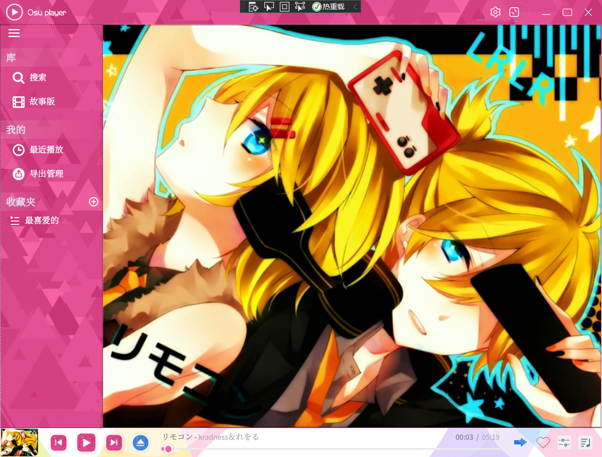

前段时间想起了以前@pzhxbz给我推荐的🔘 OSU-Player ，发现我曾经下载的版本已经不能用了。随即上Github下了份代码下来编译，发现还是存在一些问题，今天正好有空就想着帮忙fix一下，顺便也学习一下C#。

Hitsound Loading Error
首先编译一份可执行文件，在运行的过程发生了很多问题，报错如下
1 2 3 4 5 6 7 8 9 10 11 12 13 14 15 16 17 18 19 20 21 22 23 [00:23:26] Milky.OsuPlayer.Media.Audio.ObservablePlayController+ObservablePlayController_LoadError: Load error while loading beatmap: J:\Games\Base\OSU!\Songs\351630 kradness&Reol - Remote Control\kradness&Reol - Remote Control (Taeyang) [Max Control!].osu System.NullReferenceException: 未将对象引用设置到对象的实例。 在 Milky.OsuPlayer.Media.Audio.Player.Subchannels.SoundElement.get_NearlyPlayEndTime() 位置 C:\Users\Administrator\Documents\GitHub\Osu-Player\OsuPlayer.Media.Audio\Player\Subchannels\SoundElement.cs:行号 13 在 Milky.OsuPlayer.Media.Audio.Player.Subchannels.MultiElementsChannel.<>c.<Initialize>b__46_2(SoundElement k) 位置 C:\Users\Administrator\Documents\GitHub\Osu-Player\OsuPlayer.Media.Audio\Player\Subchannels\MultiElementsChannel.cs:行号 99 在 System.Linq.Enumerable.WhereSelectArrayIterator`2.MoveNext() 在 System.Linq.Enumerable.Max(IEnumerable`1 source) 在 System.Linq.Enumerable.Max[TSource](IEnumerable`1 source, Func`2 selector) 在 Milky.OsuPlayer.Media.Audio.Player.Subchannels.MultiElementsChannel.<Initialize>d__46.MoveNext() 位置 C:\Users\Administrator\Documents\GitHub\Osu-Player\OsuPlayer.Media.Audio\Player\Subchannels\MultiElementsChannel.cs:行号 99 --- 引发异常的上一位置中堆栈跟踪的末尾 --- 在 System.Runtime.CompilerServices.TaskAwaiter.ThrowForNonSuccess(Task task) 在 System.Runtime.CompilerServices.TaskAwaiter.HandleNonSuccessAndDebuggerNotification(Task task) 在 System.Runtime.CompilerServices.ConfiguredTaskAwaitable.ConfiguredTaskAwaiter.GetResult() 在 Milky.OsuPlayer.Media.Audio.OsuMixPlayer.<InnerLoad>d__26.MoveNext() 位置 C:\Users\Administrator\Documents\GitHub\Osu-Player\OsuPlayer.Media.Audio\OsuMixPlayer.cs:行号 95 --- 引发异常的上一位置中堆栈跟踪的末尾 --- 在 System.Runtime.CompilerServices.TaskAwaiter.ThrowForNonSuccess(Task task) 在 System.Runtime.CompilerServices.TaskAwaiter.HandleNonSuccessAndDebuggerNotification(Task task) 在 System.Runtime.CompilerServices.ConfiguredTaskAwaitable.ConfiguredTaskAwaiter.GetResult() 在 Milky.OsuPlayer.Media.Audio.OsuMixPlayer.<Initialize>d__24.MoveNext() 位置 C:\Users\Administrator\Documents\GitHub\Osu-Player\OsuPlayer.Media.Audio\OsuMixPlayer.cs:行号 65 --- 引发异常的上一位置中堆栈跟踪的末尾 --- 在 System.Runtime.CompilerServices.TaskAwaiter.ThrowForNonSuccess(Task task) 在 System.Runtime.CompilerServices.TaskAwaiter.HandleNonSuccessAndDebuggerNotification(Task task) 在 System.Runtime.CompilerServices.ConfiguredTaskAwaitable.ConfiguredTaskAwaiter.GetResult() 在 Milky.OsuPlayer.Media.Audio.ObservablePlayController.<LoadAsync>d__59.MoveNext() 位置 C:\Users\Administrator\Documents\GitHub\Osu-Player\OsuPlayer.Media.Audio\ObservablePlayController.cs:行号 262
定位了一下这个问题，播放器在载入リモコン 这个铺面的时候可以复现bug，断点在OsuPlayer.Media.Audio\Player\Subchannels\SoundElement.cs line 13
1 2 3 4 5 6 7 8 9 10 11 12 13 14 15 public double NearlyPlayEndTime => GetCachedSoundAsync().Result.Duration.TotalMilliseconds + Offset;... internal async Task<CachedSound> GetCachedSoundAsync ( if (_cachedSound != null ) return _cachedSound; var result = await CachedSound.GetOrCreateCacheSound(FilePath).ConfigureAwait(false ); _cachedSound = result; return result; }
这段代码是对Hitsound的一个缓存机制的一部分（我觉得这个缓存优化很妙，避免了很多重复的对FS的请求）。调试中FilePath为"OsuPlayer.Wpf\bin\Debug\default\normal-hitnormal2.wav"，这个路径在本地缓存中未命中。
定位到AnalyzeHitsoundFiles函数： 1 2 3 4 5 6 7 8 9 10 11 12 13 14 15 16 17 18 19 20 21 22 23 24 25 26 27 28 29 private IEnumerable<(string , HitsoundType)> AnalyzeHitsoundFiles(...){ ... for (var i = 0 ; i < tuples.Count; i++) { var fileNameWithoutIndex = tuples[i].Item1; var hitsoundType = tuples[i].Item2; int baseIndex = hitObject.CustomIndex > 0 ? hitObject.CustomIndex : timingPoint.Track; string indexStr = baseIndex > 1 ? baseIndex.ToString() : "" ; var fileNameWithoutExt = fileNameWithoutIndex + indexStr; string filePath; if (timingPoint.Track == 0 ) filePath = Path.Combine(Domain.DefaultPath, fileNameWithoutExt + AudioPlaybackEngine.WavExtension); else if (waves.Contains(fileNameWithoutExt)) filePath = _player.GetFileUntilFind(_sourceFolder, fileNameWithoutExt); else filePath = Path.Combine(Domain.DefaultPath, fileNameWithoutExt + AudioPlaybackEngine.WavExtension); tuples[i] = (filePath, hitsoundType); } return tuples; }
Wiki里对hitsounds的一些约定 ，这里同时也描述了osu对于hitsound的加载模式:
The sound file is loaded from the first of the following directories that contains a matching filename:
Beatmap, if index is not 0
Skin, with the index removed
Default osu! resources, with the index removed
遵循这里的描述，只需要将beatmap中无法找到的资源去掉index即可。
SoundElement Unexpected Reference
Fix了上面的error之后在加载另一个铺面的时候又遇到一个报错
1 2 3 4 5 6 7 8 9 10 11 12 13 14 15 16 17 18 19 20 21 22 23 24 25 26 27 28 29 30 31 [01:59:08] Milky.OsuPlayer.Media.Audio.OsuMixPlayer+Initialize: Error while Initializing players. System.ArgumentNullException: 值不能为 null。 参数名: key 在 System.Collections.Concurrent.ConcurrentDictionary`2.ContainsKey(TKey key) 在 Milky.OsuPlayer.Media.Audio.Wave.CachedSound.<GetOrCreateCacheSound>d__35.MoveNext() 位置 C:\Users\Administrator\Documents\GitHub\Osu-Player\OsuPlayer.Media.Audio\Wave\CachedSound.cs:行号 90 --- 引发异常的上一位置中堆栈跟踪的末尾 --- 在 System.Runtime.CompilerServices.TaskAwaiter.ThrowForNonSuccess(Task task) 在 System.Runtime.CompilerServices.TaskAwaiter.HandleNonSuccessAndDebuggerNotification(Task task) 在 System.Runtime.CompilerServices.ConfiguredTaskAwaitable`1.ConfiguredTaskAwaiter.GetResult() 在 Milky.OsuPlayer.Media.Audio.Player.Subchannels.SoundElement.<GetCachedSoundAsync>d__28.MoveNext() 位置 C:\Users\Administrator\Documents\GitHub\Osu-Player\OsuPlayer.Media.Audio\Player\Subchannels\SoundElement.cs:行号 25 [01:59:08] Milky.OsuPlayer.Media.Audio.ObservablePlayController+ObservablePlayController_LoadError: Load error while loading beatmap: J:\Games\Base\OSU!\Songs\980453 Kyary Pamyu Pamyu - PONPONPON\Kyary Pamyu Pamyu - PONPONPON (deetz) [Extreme].osu System.ArgumentNullException: 值不能为 null。 参数名: key 在 System.Collections.Concurrent.ConcurrentDictionary`2.ContainsKey(TKey key) 在 Milky.OsuPlayer.Media.Audio.Wave.CachedSound.<GetOrCreateCacheSound>d__35.MoveNext() 位置 C:\Users\Administrator\Documents\GitHub\Osu-Player\OsuPlayer.Media.Audio\Wave\CachedSound.cs:行号 90 --- 引发异常的上一位置中堆栈跟踪的末尾 --- 在 System.Runtime.CompilerServices.TaskAwaiter.ThrowForNonSuccess(Task task) 在 System.Runtime.CompilerServices.TaskAwaiter.HandleNonSuccessAndDebuggerNotification(Task task) 在 System.Runtime.CompilerServices.ConfiguredTaskAwaitable`1.ConfiguredTaskAwaiter.GetResult() 在 Milky.OsuPlayer.Media.Audio.Player.Subchannels.SoundElement.<GetCachedSoundAsync>d__28.MoveNext() 位置 C:\Users\Administrator\Documents\GitHub\Osu-Player\OsuPlayer.Media.Audio\Player\Subchannels\SoundElement.cs:行号 25 [01:59:08] Milky.OsuPlayer.Media.Audio.ObservablePlayController+LoadAsync: Error while loading new beatmap. BeatmapId: 2051808; BeatmapSetId: 980453 System.ArgumentNullException: 值不能为 null。 参数名: key 在 System.Collections.Concurrent.ConcurrentDictionary`2.ContainsKey(TKey key) 在 Milky.OsuPlayer.Media.Audio.Wave.CachedSound.<GetOrCreateCacheSound>d__35.MoveNext() 位置 C:\Users\Administrator\Documents\GitHub\Osu-Player\OsuPlayer.Media.Audio\Wave\CachedSound.cs:行号 90 --- 引发异常的上一位置中堆栈跟踪的末尾 --- 在 System.Runtime.CompilerServices.TaskAwaiter.ThrowForNonSuccess(Task task) 在 System.Runtime.CompilerServices.TaskAwaiter.HandleNonSuccessAndDebuggerNotification(Task task) 在 System.Runtime.CompilerServices.ConfiguredTaskAwaitable`1.ConfiguredTaskAwaiter.GetResult() 在 Milky.OsuPlayer.Media.Audio.Player.Subchannels.SoundElement.<GetCachedSoundAsync>d__28.MoveNext() 位置 C:\Users\Administrator\Documents\GitHub\Osu-Player\OsuPlayer.Media.Audio\Player\Subchannels\SoundElement.cs:行号 25
报错调用栈的结尾为NearlyPlayEndTime.get() -> GetCachedSoundAsync()。在断点处发现FilePath为null而且ControlType为ChangeBalance，阅读理解了一下代码发现有几类SoundElement在实例化的时候是没有初始化FilePath的，那么按理来说它们在生命周期中就不能调用GetCachedSoundAsync()这个方法，翻到MultiElementsChannel.cs也印证了我的想法。 1 2 3 4 5 6 7 8 9 10 11 12 13 14 15 16 switch (soundElement.ControlType){ case SlideControlType.None: var cachedSound = await soundElement.GetCachedSoundAsync().ConfigureAwait(false ); ... break ; case SlideControlType.StartNew: ... case SlideControlType.StopRunning: ... case SlideControlType.ChangeBalance: ... case SlideControlType.ChangeVolume: ... }
因此报错的原因肯定是调用栈上存在非预期调用，检查后定位到了如下代码
1 2 3 4 5 6 7 var ordered = SoundElements.OrderBy(k => k.Offset).ToArray();var last9Element = ordered.Skip(ordered.Length - 9 ).ToArray();var max = TimeSpan.FromMilliseconds(last9Element.Length == 0 ? 0 : last9Element.Max(k => k.NearlyPlayEndTime));Duration = MathEx.Max( TimeSpan.FromMilliseconds(SoundElements.Count == 0 ? 0 : SoundElements.Max(k => k.Offset)), max);
这里很明显是在引用NearlyPlayEndTime之前没有对ControlType做判断，故补上。
Background Load Error
修bug的第二天，原项目代码比较熟了写fix就很快，下面写的会简单一点。
error while loading 6687 World is Mine 。定位发现这个图的视频在.osu中的标签是1而不是Video，查了Wiki 发现这是合法的：
Video may be replaced by 1.
故补上。
Storyboard Parse Error
OSharp.Story报错，查了一下是解析一个Storyboard Object 的时候出了问题，查了一下资料，发现少处理了一个缺省参数：
(looptype): LoopForever (default if you leave this value off ; the animation will return to the first frame after finishing the last frame)
故补上。
Folder Name Error
智障Windows。
714239 More One Night 这张图的文件夹结尾被解析出来是个空格，加个Trim()即可。
关于文件夹末尾空格和\\?\的东西我投稿到tg了。
后来分析了一下这个空格产生的原因是osu在为每一个beatmap创建文件夹的时候文件夹名有一个大约为70左右的最大长度截断，由于beatmap的名字中是允许空格的，所以有的谱子对应的文件夹在创建文件夹的时候文件夹名会刚好截断到空格，这个空格在文件夹中会消失，但是在osu.db中会保存。OSU应该悄悄处理了这种情况。
MiniPlayer Hiding Error
迷你播放器在切回正常窗口再切回模拟模式的时候会躲你的鼠标。
在源码中加了几行log，发现主要是由于位置计算的实现有问题导致的。位置计算的作用是判断当迷你窗口到屏幕边缘是判断是否隐藏和往哪个方向隐藏。在获取当前窗口位置时，模块假设此时鼠标一定在拖动窗口，所以首先获取当前鼠标位置，然后获取鼠标停留窗口的区域。但是这个前提是错误的，如果原本迷你窗口的位置就已经在屏幕边缘了，然后用户在迷你模式和正常模式之间来回切换，此时之前提到的前提便多半不再成立，位置获取出错会导致隐藏动画出错。
写了个很保守的fix，对当前窗口区域持久化，将这个变量的值在退出时写到配置文件里，并于启动时自动加载。
Unexcepted Hotkey Trigger
播放器用着用着音量会自己增加，调试了一下发现是个很诡异的bug。在音量+快捷键未设置以及音量+之前的快捷键都已设置的情况下，将当前窗口从Osu-Player切到RDP会触发音量+快捷键。如果此时设置音量+，则切换窗口的动作就会触发音量-。也就是说把窗口从Osu-Player切换到RDP的这个动作会触发第一个未设置的快捷键。查了一下代码，发现未设置的快捷键的值都为Keys.None，按理来说确实触发不到。不知道这个None的信号是哪来的，写了个fix判断当前绑定快捷键为None时不注册回调函数。
Analyzed
error while loading 92179 Romeo and Cinderella
解析铺面的时候没有处理[Colours]: SliderBorder，没空去处理那个KeyValueFlag不一致的问题，提了个issue。
error while loading 3756 osu! tutorial
缺省参数修了，还有一个错误引用不知道为什么报出来的暂时不想修
error while loading 118 Survival dAnce
error while loading 243 Marisa wa Taihen na Mono wo Nusunde Ikimashita
osu file版本过低，不想修
error while loading 1139736 Koi Wa Chaos no Shimobenari
有一个用LAME转出来的wav文件头是ID3，OSU能播但是OSU-Player解析失败，音频库的问题不想修
Pending
error while loading 884669 Aleph-0
error while loading 92179 Romeo and Cinederella
error while loading Acid Rain
stuck while loading 999586 Ryokugan no Jealousy
can't stop slider
video won't be played in mini-mode correctly